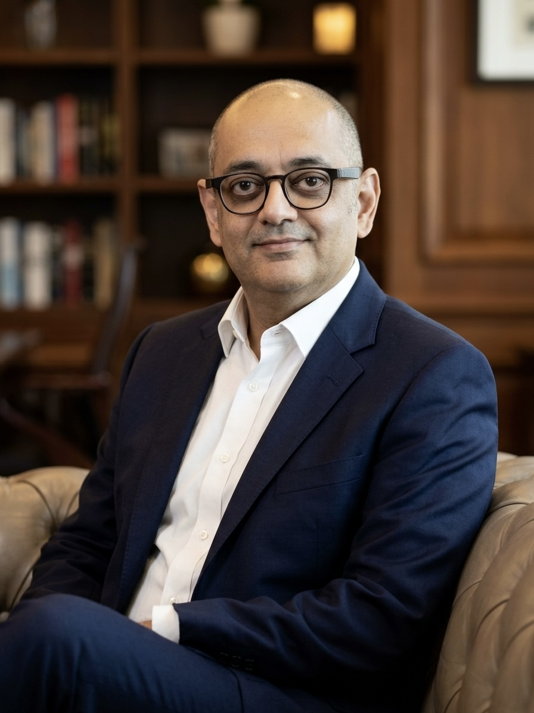

About Ameet Babbar
Architect.
Landscape architect.
Systems thinker.

I am an architect and landscape architect based in New Delhi, where I lead design at Babbar & Babbar Architects. Over the past three decades I have worked on diplomatic missions, institutional campuses, judicial complexes, housing, conservation and large-scale landscape planning across India and the Middle East.
Practice
Buildings are my profession, but they are not my primary interest. I am fascinated by the systems that shape the built environment: how cities evolve, how information flows through projects, how technology changes design, and how decisions made on paper become places that people inhabit for decades.
My work sits at the intersection of architecture, landscape, technology and systems thinking. I believe architecture is less about creating objects than about understanding relationships—between people and place, buildings and landscape, climate and culture, design and construction, information and the physical world.
Questions
How might artificial intelligence change the role of the architect? Why do some cities adapt while others stagnate? What can software teach us about planning? Can landscape be judged by ecological performance rather than visual appeal? How does a drawing evolve from a sketch into an agreement that hundreds of people use to construct a building?
These questions occupy me as much as the projects themselves. I continue to practise because ideas should be tested against reality: every project refines a hypothesis, and every completed building provides evidence for the next one.
This website is an ongoing notebook of essays, notes and observations on architecture, cities, landscape, technology and the future of professional practice. I do not claim to have definitive answers. But I believe architecture advances when we ask better questions.